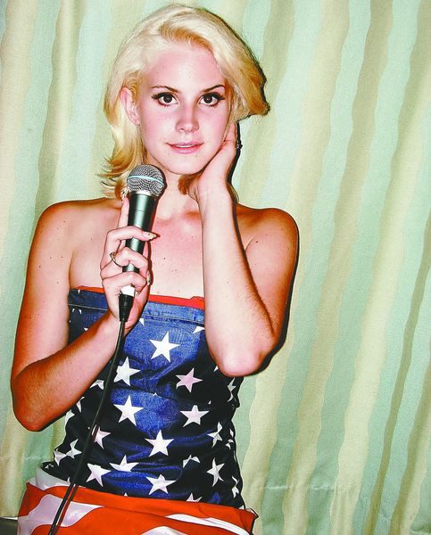

Elizabeth Woolridge Grant nasceu em Nova Iorque, no dia 21 de junho de 1985. É filha de um empresário norueguês, dono de uma renomada agência de marketing "Grey Group", Robert England Grant Jr. e da advogada e também professora, Patricia Ann "Patt" Hill, da qual possui uma certa ascendência escocesa e inglesa. Ela também tem dois irmãos, a fotógrafa Caroline "Chuck" e Charlie. Seu avô por parte de pai foi o importante bancário e empresário estadunidense Robert England Grant.
Ingresso na Universidade
Figura 2: Anuário de Lana Del Rey na universidade.
Apesar de ter nascido em Nova Iorque, Del Rey cresceu no interior, na pacata cidade de Lake Placid, onde passou sua infância e adolescência. Em seguida, ingressou-se na Fordham University, também em Nova Iorque, estudando um ramo da filosofia conhecido como metafísica.
Começo de carreira

Figura 3: Lana Del Rey no começo da carreira sob o pseudônimo 'Lizzy Grant'.
Após seu tio ter-lhe ensinado a tocar guitarra, ela percebeu que provavelmente poderia criar várias melodias, e começou a se apresentar em clubes ao redor da cidade sob vários nomes, como Sparkle Jump Rope Queen e Lizzy Grant and the Phenomena. Influenciada por amigos também cantores e compositores, deu início à sua transformação para Lizzy Grant.
Del Rey mudou-se para Londres, passando 2010 em reuniões com gravadoras, que recusaram o seu trabalho. No início da sua carreira, o seu representante escolheu o nome artístico Lana Del Rey, tendo a cantora comentado este fato, dizendo que queria fazer parte de uma banda, mas que a editora e equipe queriam que ela fosse uma artista solo.
A própria artista descreve a sua persona como uma "Nancy Sinatra gangsta", ideia corroborada pela imagem que ela transmite, que apresenta cabelos compridos, lábios muito demarcados e carnudos, olhos chamativos, lembrando o estilo das moças década de 60 e o glamour decadente da antiga Hollywood. Em 25 de abril de 2005, um Compact Disc com sete faixas foi registradas no United States Copyright Office sob o nome Elizabeth Woolridge Grant. Os títulos das faixas são presentemente desconhecidos. Entre 2005 e 2006, o álbum Sirens foi gravado sob o nome de May Jailer e vazou em maio de 2012.
Alcançando o estrelato
Figura 4: Lana Del Rey no clipe de 'Candy Necklace'
Lana Del Rey começou sua carreira musical de forma discreta, lançando músicas sob diferentes nomes artísticos antes de ganhar reconhecimento com Video Games, em 2011. O videoclipe caseiro da canção viralizou na internet, chamando a atenção da crítica e do público pelo seu estilo melancólico e cinematográfico. Esse sucesso levou ao lançamento do álbum Born to Die (2012), que consolidou sua identidade artística, misturando elementos do pop retrô com letras nostálgicas e dramáticas.
Com o passar dos anos, Lana continuou a evoluir musicalmente, explorando novas sonoridades e narrativas. Álbuns como Ultraviolence (2014) e Honeymoon (2015) mostraram um lado mais experimental e sombrio, enquanto Lust for Life (2017) trouxe colaborações e uma visão mais otimista. Sua habilidade de reinventar-se sem perder a essência fez com que sua base de fãs crescesse, tornando-a uma das vozes mais autênticas da música contemporânea.
Nos últimos anos, Lana Del Rey consolidou seu status como uma das artistas mais influentes da sua geração. Com Norman Fucking Rockwell! (2019), recebeu aclamação da crítica, sendo indicada ao Grammy, e seguiu com projetos aclamados como Chemtrails over the Country Club (2021) e Did You Know That There's a Tunnel Under Ocean Blvd (2023). Sua estética única e composições poéticas garantiram seu espaço na indústria, provando que sua carreira foi construída com autenticidade e inovação.